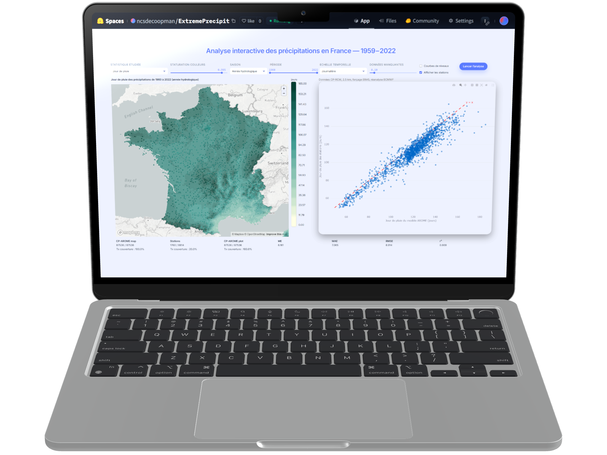
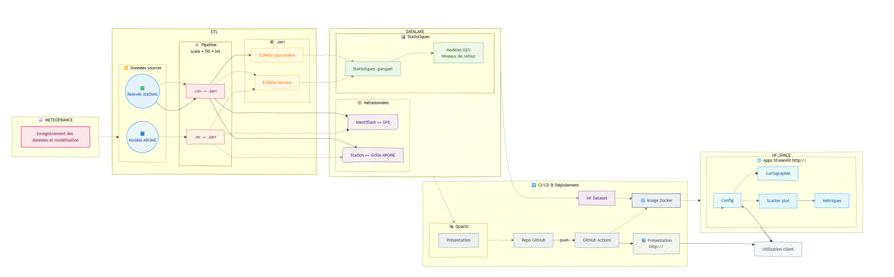

ExtremePrecipit - Caractérisation des précipitations extrêmes horaires en France
précipitations extrêmes, climat, modélisation climatique, changement climatique, France, adaptation territoriale, risques climatiques
Modélisation et cartographie de l’évolution des pluies extrêmes en France (1959–2022) à partir de données CNRM-AROME (2.5 km) et stations Météo-France.
- Conception d’un pipeline d’extraction, transformation et chargement (ETL) de 10 milliards de données (100 Go) de précipitations horaires modélisées (88 000 points) et observées (14 000 points) sur la période 1959–2022 (560 640 heures), distribué avec Dask et orchestré via Airflow sur cluster HPC Linux (formats : NetCDF, Zarr, Parquet).
- Pipeline d’entraînement distribué et de sélection automatique de 7 modèles GEV spatio-temporels (stationnaires et non stationnaires) par point, basé sur la log-vraisemblance profilée, pour la modélisation des extrêmes saisonniers et mensuels des séries temporelles (gain de 80 % de temps de traitement par rapport à une exécution séquentielle standard).
- Evaluation de la correspondance à la réalité par indicateur de corrélation et biais de la modélisation climatique.
- Génération automatisée de rapports scientifiques (Quarto) et dashboards (Streamlit, Plotly, Leafmap) pour la visualisation spatio-temporelle des tendances 1995–2022 avec une industrialisation du pipeline : CI/CD (Docker, GitHub Actions, HuggingFace Datasets & Spaces), configuration as-code (YAML), monitoring et reproductibilité complète.

1 Contexte et problématique
Le réchauffement climatique global se manifeste de manière particulièrement marquée sur les continents par rapport aux océans (1). Depuis l’ère préindustrielle, l’augmentation des températures a atteint environ 1°C à l’échelle mondiale, 1,7°C en France métropolitaine et jusqu’à 2°C dans les Alpes françaises (2). Ce réchauffement entraîne une modification du régime des précipitations en raison notamment d’une atmosphère plus chaude capable de contenir davantage d’humidité, selon la relation de Clausius-Clapeyron (+7%/°C) (3). Or, l’air chaud monte, se refroidit et l’eau se condense. En théorie, cela conduit à une augmentation des précipitations extrêmes, bien que cette réponse puisse être modulée localement par des changements de circulation atmosphérique (2).
L’objectif principal de ce travail consiste à caractériser et analyser finement les tendances des précipitations extrêmes horaires en France. Si les tendances des extrêmes journaliers sont désormais bien documentées à l’échelle mondiale et régionale, les précipitations horaires — pourtant cruciales pour les inondations soudaines — souffrent encore d’un manque de documentation, notamment en France. Les observations longues et homogènes y sont rares, les tendances peu significatives, et les études ciblées encore peu nombreuses. Ce déficit de connaissance s’explique à la fois par la faible durée des séries horaires disponibles et par la complexité physique des processus convectifs à l’origine de ces extrêmes. La réanalyse AROME forcée par ERA5 (1959–2022) fournit un jeu de données unique pour étudier les précipitations horaires extrêmes en France. Toutefois, la validité des extrêmes simulés par ce modèle n’a jamais été évalué, tant du point de vue statistique que physique. Notre étude s’inscrit dans cette lacune. Elle vise à évaluer finement la capacité du modèle AROME à reproduire les extrêmes horaires observés, en mettant en regard les tendances modélisées et observées sur plusieurs décennies. Elle apporte ainsi une double contribution : 1) méthodologique, en évaluant de nouvelles simulations au regard d’observations d’extrêmes ; 2) climatique, en documentant pour la première fois les évolutions temporelles des extrêmes horaires en France sur 60 ans à partir d’un modèle à convection explicite validé. Ce travail éclaire ainsi la manière dont les extrêmes horaires évoluent dans un contexte de réchauffement climatique, tout en évaluant la pertinence des modèles climatiques CPM pour les études d’impact hydrométéorologique à l’échelle locale.
2 Données
Ce projet s’appuie sur les données issues du modèle régional de climat CNRM-AROME, forcé par la réanalyse ERA5, couvrant la période allant de 1959 à 2022 avec une résolution spatiale fine de 2,5 km (4). Ce modèle appartient à la catégorie des CP-RCMs, ce qui lui permet de simuler explicitement la convection profonde, élément clé pour capturer correctement les précipitations extrêmes à échelle horaire (4).
Les données pluviométriques horaires recueillies par Météo-France serviront de référence pour la validation du modèle. L’utilisation conjointe de ces deux jeux de données vise à établir la fiabilité du modèle régional dans la représentation des précipitations extrêmes observées et à quantifier l’incertitude associée aux simulations. Cette validation est indispensable pour garantir la pertinence des résultats obtenus concernant les périodes de retour des précipitations extrêmes et leurs évolutions potentielles dans le contexte du changement climatique (2,4).
3 Approche et méthodologie
3.1 Structuration choisie
L’approche mise en œuvre dans ce projet s’inscrit dans une démarche moderne de mise en production. Un pipeline a été développé afin d’automatiser le traitement, la validation et l’analyse des données.
Dans un premier temps, les données brutes du modèle AROME fournies par Météo-France et les relevés des stations météorologiques téléchargées sur la plateforme Météo-France sont intégrées dans un format optimisé .zarr, facilitant ainsi le stockage performant et l’accès rapide aux grandes quantités de données. Cette transformation repose sur des scripts ETL (Extract-Transform-Load), assurant une gestion des données spatiales et temporelles. Une attention particulière est portée à la gestion des métadonnées, indispensables pour assurer la traçabilité et la reproductibilité des résultats. Ces métadonnées permettent notamment la correspondance précise entre les données des stations et la grille spatiale du modèle AROME.
Le pipeline d’analyse inclut ensuite la génération automatique de statistiques détaillées au format .parquet, suivie d’une modélisation statistique approfondie basée sur la théorie des valeurs extrêmes (GEV), permettant de quantifier les périodes de retour et détecter les tendances.
Cette infrastructure bénéficie d’un processus CI/CD complet, géré via GitHub Actions, garantissant ainsi l’automatisation des déploiements. Une image Docker encapsule l’ensemble de l’application Streamlit et le téléchargement des données depuis HuggingFace Datasets vers HuggingFace Spaces, simplifiant ainsi le déploiement. Ce déploiement offre aux utilisateurs finaux des visualisations intuitives et dynamiques (cartographie, graphiques interactifs, métriques), alimentées par une configuration paramétrable. Les résultats et analyses sont également documentés dans des rapports et présentations générés automatiquement avec Quarto, assurant une diffusion claire, transparente et automatique des résultats auprès des parties prenantes.
 Figure 1 : Pipeline du projet
{kind=link}
3.2 Justification de l’organisation actuelle
Nous avons choisi un partitionnement physique très fin — un fichier Parquet par combinaison (type de donnée / année / saison) — car il colle exactement aux contraintes et aux objectifs du projet avec un besoin analytique ciblé, des données versionnées, une app publique Streamlit gratuite et efficace.
Responsabilité unique et traçabilité Chaque fichier représente une seule unité logique. Si la saison AROME-2022-DJF doit être corrigée, un seul fichier change : cela réduit les risques de régression et simplifie les revues de code / données.
Déploiement statique sur Hugging Face Datasets Le projet se devait être entièrement gratuit. Le stockage HF ne fournit pas de moteur SQL côté serveur ; il sert des objets statiques via HTTP. Un fichier = une URL : c’est pour Streamlit qui télécharge juste ce dont il a besoin.
CI/CD rapide et frugal Le pipeline ne re-génère ni ne re-charge toutes les données « juste au cas où ».
Lisibilité humaine et reproductibilité L’arborescence documente d’elle-même la structure du jeu de données ; pas besoin d’un métastore externe pour comprendre ce qu’on possède. Cela renforce la transparence et la reproductibilité des analyses.
Les outils comme DVC encouragent exactement cette logique. Il serait d’ailleurs intéressant de mettre en place un traking automatiquement des Parquet pour retrouver exactement la version utilisée dans une analyse passée.
4 Technologies utilisées
Ce projet repose sur un écosystème diversifié :
Formats de données massives et stockage optimisé : Utilisation de
.zarrpour segmenter et stocker efficacement les données climatiques (sortie du modèle AROME et relevés stations) à haute résolution horaire/journalière, avec parallélisation native.Transformation et ingestion automatisées (ETL) : Scripts Python orchestrent le passage de
.nc/.csvvers.zarr, ainsi que la production de.parquetpour les analyses statistiques, garantissant traçabilité et performance des traitements.Métadonnées spatiales avancées : Architecture permettant l’association des identifiants de grille GPS et des stations, assurant la cohérence spatiale entre les modèles AROME et les observations terrain.
Modélisation statistique : Pipeline dédié à la modélisation GEV, extrait les périodes de retour et tendances, avec scripts reproductibles via modules Python.
Orchéstration des pipelines : Airflow permet de planifier, de surveiller et d’exécuter automatiquement les tâches.
MLOps & CI/CD :
- GitHub Actions pilotent le cycle d’intégration, création d’image Docker et mise à jour du dataset Hugging Face.
- Conteneurs Docker encapsulent l’environnement complet, assurant portabilité et versionnement des dépendances.
Déploiement et visualisation :
- Publication du dataset climatiques versionnés sur Hugging Face Dataset.
- Création d’une interface Streamlit (cartographie, scatter plots, tableau de bord métriques) pour interaction client dynamique.
Reporting et documentation : Utilisation de Quarto pour générer automatiquement rapports HTML/PDF intégrant les résultats statistiques, visualisations et modèles, avec publication automatisée via CI.
Ce dispositif intègre une ingestion automatisée, un stockage évolutif, une modélisation statistique robuste, un packaging reproductible via Docker, et un déploiement vers plateforme interactive. La structure a été conçue pour accueillir des données de façon continuelle.
5 Lien vers le projet
Le code source est accessible sur GitHub.
L’application est accessible sur HuggingFace.
Le rapport est accessible sur ce site.
Les cartes générées sont accessibles sur ce site.
Les présentations Master 2 - UGA et Météo-France (enregistrement vidéo) sont également disponibles.
6 Cas d’usage et perspectives
Cette étude présente plusieurs opportunités dans le cadre d’applications pratiques. Premièrement, les résultats permettraient une meilleure anticipation des événements météorologiques extrêmes, essentielle pour la gestion des risques liés aux inondations et aux dégâts associés aux fortes précipitations. Les collectivités territoriales pourraient utiliser ces informations pour adapter leurs plans de prévention des risques naturels (PPRN) et renforcer leur résilience face au changement climatique.
Deuxièmement, l’évaluation fine et spatialisée des précipitations extrêmes horaires fournirait aux gestionnaires des ouvrages hydrauliques, comme EDF, des données cruciales pour optimiser la gestion des réservoirs et la sécurité des barrages en période de crise.
Enfin, à plus long terme, les résultats pourraient servir de base à des projections climatiques locales, alimentant les stratégies d’adaptation au changement climatique dans différents secteurs (urbanisme, agriculture, infrastructures).